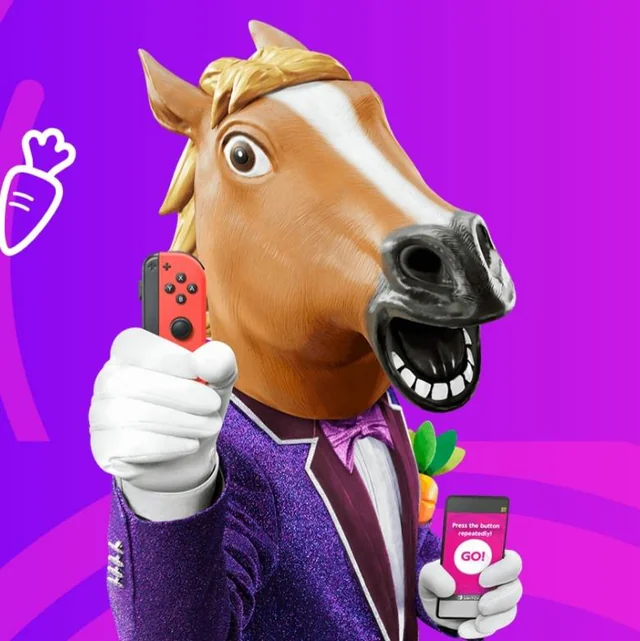

Bienvenidos al circo de juegos de Horace
¡Saludos, queridos visitantes! Soy Horace, vuestro anfitrión en este circo de juegos y enigmas. ¡Es hora de que todo el mundo se divierta y prueben mis juegos! ¿Quieres jugar conmigo?.
Y aquí, en el corazón de nuestro espectáculo, les presento la misteriosa UFU. Su energía emite un brillo fascinante, ¿no les parece intrigante?

¿Están listos para adentrarse en este mundo de diversión y desafiar lo desconocido?
Reglas del Juego
Horace te desafía a descubrir los secretos divertidos en este sitio web. ¡Pero ten cuidado, sus travesuras pueden llevarte a lugares inesperados!
Juego de Adivinanzas
¡Hora de poner a prueba tus habilidades! Adivina el número que estoy pensando entre 1 y 10:
Juego de Adivinanzas de Múltiples Preguntas
¿Estás listo para otro desafío? Responde las siguientes preguntas:
Juego de Verdadero o Falso
¿Crees que puedes distinguir entre lo verdadero y lo falso? ¡Demuéstralo respondiendo estas afirmaciones!
LOS CUENTOS EXTRAVAGANTES Y DIVERTIDOS DE HORACE
En una pequeña ciudad famosa por sus historias digitales, vivía un hombre admirado por su habilidad para entretener y crear. Él era el maestro de las risas, el arquitecto de enigmas que todos acudían a ver para escapar del gris de la rutina diaria. Sus juegos eran ventanas a mundos de fantasía, sus historias, un refugio seguro del mundo exterior.
Pero el hombre tenía una sed insaciable de innovación y un deseo de permanecer siempre en la cresta de la ola digital. Empezó a experimentar con formas de entretenimiento que bordeaban lo surreal. Los circos digitales que creaba eran más que simples juegos; eran experiencias que alteraban la mente, diseñadas para sumergir completamente a los participantes en realidades alteradas.
Con cada nuevo juego, el hombre se adentraba más en la esencia de lo efímero. Sus colaboraciones se volvieron más extravagantes, rodeado siempre de personajes tan coloridos como enigmáticos, que más parecían sacados de un carrusel de sueños y pesadillas. Lo que una vez fueron alegres interpretaciones de la realidad, gradualmente se tornaron en un laberinto de espejos distorsionados.
La noche del gran eclipse digital, el hombre presentó su obra maestra. Una competencia bajo la luz de la luna, donde el premio era el secreto último del universo digital. Pero aquel juego tenía un precio; se decía que quien entraba, nunca volvía a salir igual. Los ecos de sus pasos se perdían en un laberinto sin fin, y sus risas se transformaban en siniestros murmullos de código y luz neón.
Cuentan que en ese juego, el hombre perdió su humanidad. Su obsesión por conquistar el espectro digital lo consumió, dejando en su lugar una figura enmascarada, un avatar de su antiguo yo, que ahora ronda el mundo virtual, perpetuamente en busca de nuevos participantes para sus siniestros juegos. Este ser, vestido con la grotesca máscara de un caballo, es un recordatorio oscuro de que en la búsqueda del entretenimiento supremo, algo muy preciado puede perderse.
En la ciudad, ahora advierten a los jóvenes curiosos: cuidado con los juegos que eligen jugar, pues no todos los juegos están hechos solo para divertir.
L̷A̸ ̶V̶A̷S̸ ̴A̴ ̴P̷A̸S̷A̶R̷ ̷I̶N̸C̵R̴E̴I̵B̵L̸E̸ ̷C̸O̷N̴M̸I̵G̵O̵
¡Sonríe! Hay algo en la oscuridad v̴i̷e̶n̷d̸o̴t̴e̴ ̷e̴n̶ ̵t̶o̷d̶o̵ ̵m̵o̶m̶e̵n̵t̷o̷.̶
Bienvenido al Juego de Miedo
Estás caminando solo por un oscuro y espeluznante bosque. De repente, te encuentras frente a una bifurcación en el camino. ¿Qué decides hacer?
Contacto
¿Listos para unirse a la aventura? Envíen un mensaje a Horace y únanse al juego.